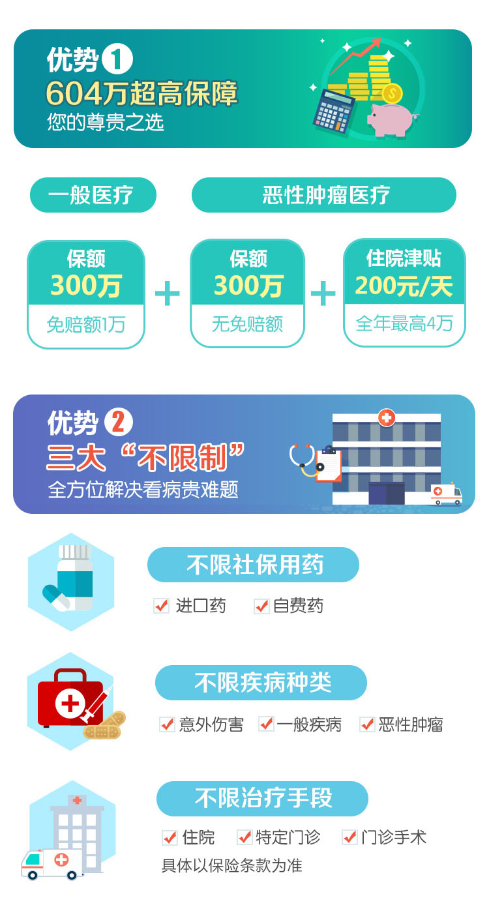
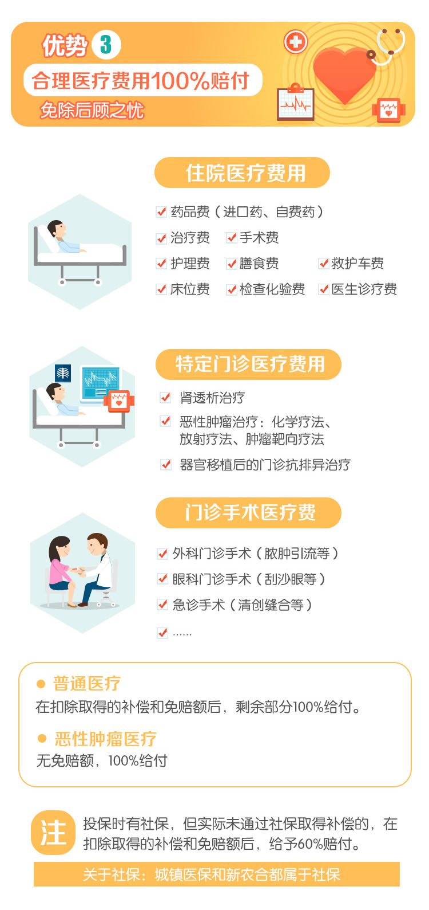
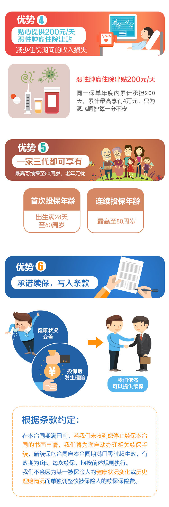
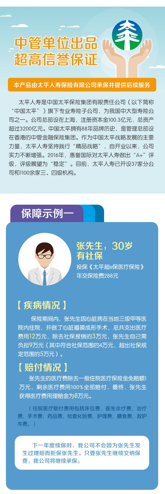
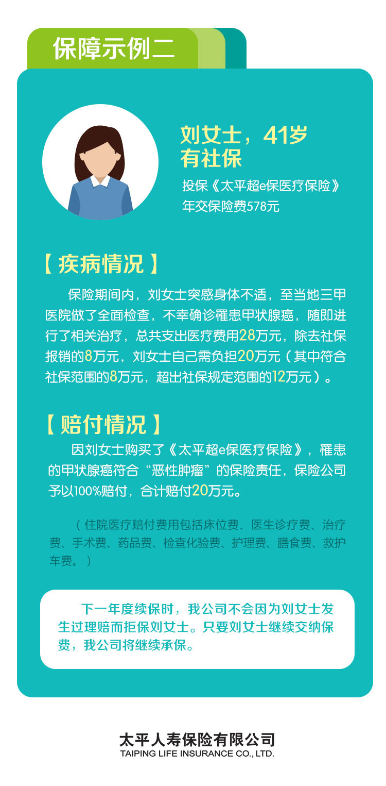

产品介绍
详细说明





| 产品名称 | 太平超e保医疗保险 |
| 保障区域 | 中国大陆（不含港、澳、台） |
| 医疗机构 | 中国大陆境内二级（含二级）以上公立医院普通部 |
| 一般医疗 年免赔额 |
1万 |
| 恶性肿瘤 医疗年免赔额 |
无 |
| 一般医疗 年限额 |
300万 |
| 恶性肿瘤 医疗年限额 |
300万 |
| 给付比例 | 100% 有社保但未先行赔付，给予60%赔付 |
| 恶性肿瘤 住院津贴日额 |
200元/日（最高以200日为限） |
A: 被保险人因意外伤害或者疾病在中华人民共和国境内（不含港、澳、台地区）二级及以上公立医院普通部接受住院、特殊门诊、门诊手术治疗的，可以赔付个人支付的、必要且合理的医疗费用。
A: 对于保障范围内的医疗费用中个人支付（含社保个人账户支付和现金支付）超过1万元的部分，无论是否属于医保范围，均可100%赔付，最高赔付金额为300万元。因恶性肿瘤住院，无免赔额，更有保额翻倍，高达600万，以及最高4万的恶性肿瘤住院津贴保险金。
A:以“有社保”身份投保但未在社保报销的，赔付比例60%。当年度产生的、赔付范围内的医疗费用，自付部分只要累计超过1万，则1万以上的医疗费用由太平人寿赔付。社保个人账户支付的金额可计入免赔额，但社保统筹或公费医疗报销部分不能计入免赔额。赔付公式：赔款=（医疗费用-取得的其他补偿-年免赔额）*60%。
A: 当年度产生的、赔付范围内的医疗费用，自付部分只要累计超过1万，则1万以上的医疗费用由太平人寿赔付。社保个人账户支付的金额可计入免赔额，但社保统筹或公费医疗报销部分不能计入免赔额。
A:可以赔付。根据条款规定若被保险人在等待期后初次确诊罹患恶性肿瘤且接受医院治疗的，对于自确诊之日起剩余保单年度内发生的合同约定的恶性肿瘤医疗费用，在给付保险金时，不再扣除年免赔额。若续保，则后续保单年度内发生的合同约定的恶性肿瘤相关的医疗费用，在给付保险金时也不再扣除年免赔额。也就是说不但本保险期间在确诊恶性肿瘤之后的相关费用理赔时不再扣除1万元，而且续保年度中因恶性肿瘤治疗发生理赔时也都不扣除1万元年免赔额。
A: 在保险销售期间，只要没有欺骗行为，首次投保成功后，后续无论被保险人身体状况是否发生变化、无论是否发生理赔，每年都能按照续保当时公布的费率表继续买（我们不对单个人进行加费、除外责任或拒保），续保的最高年龄不超过80岁。如果被保险人的年龄超过80周岁或本产品统一停售，我们将不再接受续保。
A:若我们在保险合同期满前未收到您停止续保本合同的书面申请，我们将从您授权的银行账户中自动扣取续期保费，并为您自动办理相关续保手续，新续保的合同自本合同期满日零时起生效。续保无等待期，也无需重新健康告知。您也可以通过“太平人寿95589”微信服务号自助交纳续期保费。
A: 不可以。本险种不接受带病投保的行为。投保前已患有的疾病以及症状，均不属于保障范围。
A: 我们为您提供电子保单，根据《中华人民共和国合同法》第十一条规定，数据电文是合法的合同表现形式，电子保单和纸质保单具有同等法律效力。保单承保后，我们将以短信方式告知您电子保单下载地址及下载密码。您可至太平人寿官网查询并下载电子保单。
A：您可以拨打95589官方客服电话咨询变更信息办理流程，或前往太平人寿就近网点进行办理。
1.本产品由太平人寿保险有限公司承保，面向全国销售。本公司在港澳台地区、西藏和宁夏未设有分公司，在该地区购买本产品的后续服务可能会受影响。
2.投保单的填写：本（电子）投保单为投保人与保险公司所订立保险合同的组成部分，在填写投保单之前，请仔细阅读投保单的内容并确认条款含义。本投保单应由投保人本人亲自真实、完整填写各项客户信息，且投保填写内容已征得被保险人同意，否则将影响您的合法权益。
3.投保人：18周岁以上有完全民事行为能力人，并与被保险人存在可保利益。
4.被保险人：首次投保年龄为出生满28天至60周岁的身体健康的自然人，可续保至80周岁。本产品允许投保的被保险人职业为：1-4类
5.受益人：本合同的保险金受益人为被保险人本人。
6.保险期间：本险种保险期间为一年。
7.保障区域：本产品医疗责任保障区域限于中国境内，不包括港澳台地区。
8.等待期：本产品等待期为30天。
9.犹豫期：本产品无犹豫期。
10.续保：续保时保险公司不会因为被保险人个人身体状况或使用保险情况而不续保或单独调整保费。无论是否发生理赔，续保无需健康告知，无等待期。如果被保险人的年龄超过80周岁或本产品统一停售，我们将不再接受续保。本计划续保费率和首年费率不同（具体见续保费率）
11.社会医疗保险：指各省区市城镇职工基本医疗保险办法和各省区市城镇职工地方附加医疗保险办法规定的医疗保险，包括新农合、城镇职工基本医疗保险、城镇居民基本医疗保险等政府举办的基本医疗保障项目。其中各省区市城镇职工基本医疗保险办法是指各省区市人民政府令发布的为保障职工基本医疗需求制定的管理办法。投保时请务必确认是否已有社会医疗保险，并按照实际情况进行勾选，否则将对保费及后续理赔比例产生影响。
12.免赔额：本计划免赔额为1万元，社保个人账户支付的金额可计入免赔额，但社保统筹或公费医疗报销部分不能计入免赔额，各项合计最高给付上限不超过年付总保额。
13.退保规则：本产品不支持在线退保，如需要办理退保，请前往太平人寿所在地营业网点服务柜面申请办理。自我们收到解除合同申请书时起，本合同终止。您解除合同会遭受一定损失。我们自收到解除合同申请书之日起30日内向您退还保险单的未经过净保费。未经过净保费=已支付的当期保险费×（1-35%）×（1-该保险费所保障的已经过日数/该保险费所保障的日数）。经过日数不足一日的按一日计算。在您要求解除本合同的保单年度内，如果我们已给付过任何保险金，则不退还未经过净保费。
14.阅读条款：请确认您已认真阅读《太平超e保医疗保险条款》，您了解、同意并确认上述条款内容，特别是保险责任及责任免除的部分。作为投保人，您确认对于被保险人具有可保利益。
15.保单形式：本保险提供电子保单合同，根据《中华人民共和国合同法》第十一条规定，数据电文是合法的合同表现形式，电子保单与纸质保单具有同等法律效力。保单承保后，太平人寿将向投保人指定的手机号码，发送电子保单下载地址及密码。
16.保密协议：本公司承诺未经您的同意，不会将您的信息用于其他人身保险公司和第三方机构的销售活动。
17.保单查询：保单承保后，投保人可拨打太平官方客服电话95589查询保单信息、验证保单。
投保人、被保险人或受益人、出险人的亲戚、朋友都可以向保险公司报案。
致电95589报案、中国太平95589微信公众号报案。
保险事故发生之日起10日内通知保险公司。
(1)保险合同；
(2)受益人的有效身份证件；
(3)医院出具的被保险人医疗诊断书（包括必要的病历记录及检查报告）、门诊医疗费用（如有门诊）的原始凭证和账单明细表、出院小结及住院医疗费用（如有住院）的原始凭证和账单明细表；
(4)所能提供的与确认保险事故的性质、原因等有关的其他证明和资料。
注：以上为理赔服务简要介绍，仅供参考，详细内容请以条款约定为准。
1. 本人对保险条款中关于保险责任、责任免除条款和其他免除贵公司责任的条款、保险责任等待期、保险期间、保险合同犹豫期、保险合同中止或复效、保险合同解除条款、理赔申请资料要求、投保人相关权利义务的条款等内容已经充分了解并且同意遵守。
2．所有保险责任以保险合同所载为准，除由贵公司经正式程序修改或者批注的内容外，其他任何人的口头及书面陈述、报告或合约，贵公司无需负责。
3. 本人知悉险种在本合同期满日前，若贵公司未收到本人停止续保本合同的书面申请，保险公司将自动办理相关续保手续，新续保的合同自本合同期满日零时起生效，有效期为1年。
4. 本人授权贵公司在审核本人投保、保全、理赔申请时根据需要委派医师或指定医疗机构安排被保险人进行身体检查，或向任何医生、医院、诊所、农村合作医疗机构、公安机关、保险公司或其他任何组织单位，就有关投保、保全、理赔事宜，查询、复印有关投保人及被保险人的资料或索取其他有关证明文件。
5. 本人确认以上所做的各项声明和陈述、所提供的与投保申请有关文件均完全属实无误，所有声明、陈述及所提供的文件均可作为贵公司判断是否能够承保的依据并成为保险合同的一部分，若不属实，贵公司可以依法解除本合同。
6. 本人同意提供给中国太平（指中国太平保险集团有限责任公司及其直接或间接控股的公司）的个人资料（包括本单证签署之前提供的以及本人接受中国太平各项服务时产生的信息），可用于中国太平及因服务必要而委托人的第三方为本人提供服务及推荐产品，接收信息的主体对上述信息负有保密义务。本条款自本单证签署时生效，具有独立的法律效力，不受合同成立与否及效力状态变化的影响。
7. 本人授权贵公司通过本人授权的金融机构使用本次投保所提供的银行结算账户，扣取首期及续期保险费，本人知悉首期保险费的扣款金额以实际支付确认金额为准。续期保险费将由贵公司根据年龄因素、交费方式等由系统计算给出。如本人已提供续期代扣银行账户，则贵公司将从本人同意并授权的银行结算账户中以转账的方式按期收取每期保险费。